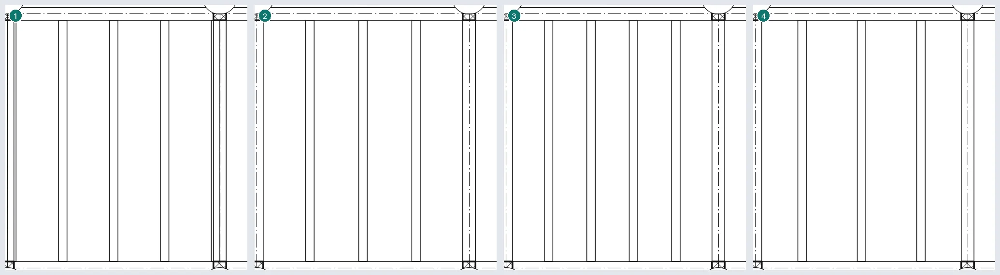
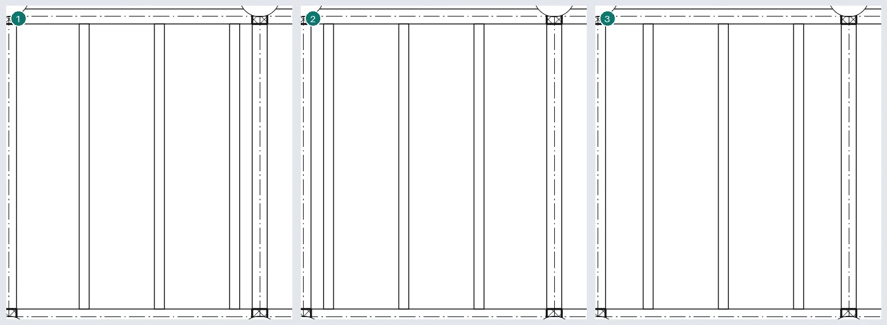
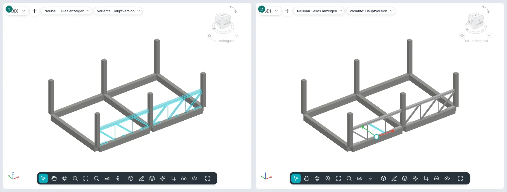
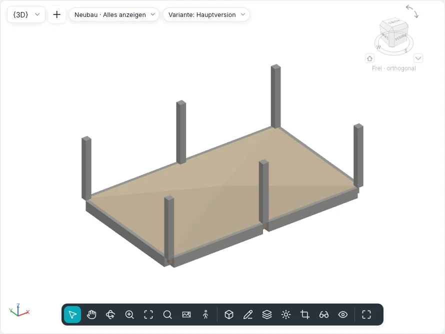
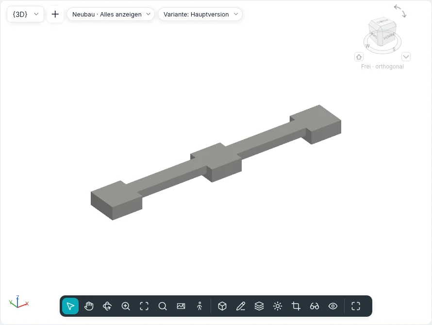
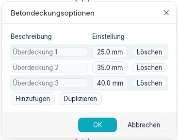
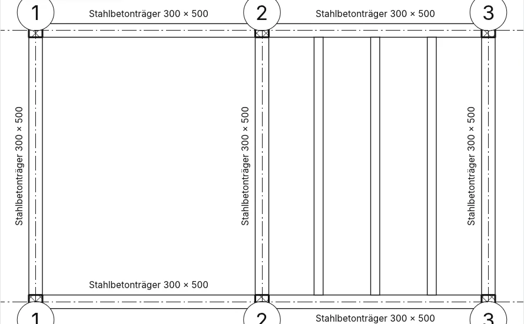

Tragwerk und Fundamente
Die Registerkarte Tragwerk (im BIMopen-Stil: Erzeugen ▸ Tragwerk) versammelt die Elemente, die das Gebäude tragen: Träger, Aussteifungen, Trägerlagen, Fachwerkträger, tragende Wände und Geschossdecken, tragende Stützen, Einzelfundamente, Streifenfundamente und Bodenplatten. Träger, Aussteifungen und die Stäbe der Fachwerkträger sind eine einzige Kategorie, Tragwerksrahmen; Einzelfundamente, Streifenfundamente und Bodenplatten sind Tragwerksfundamente. Dieselben Werkzeuge arbeiten in Grundrissen, Schnitten, Ansichten und 3D-Ansichten, wo die Ansicht es zulässt.
Typen des Tragwerksrahmens
Die Träger- und Aussteifungstypen sind parametrische Querschnitte von BIMopen, wie die der tragenden Stützen. Querschnittsform wählt die Form: Rechteckig (Beton oder Holz), Rund, Doppel-T (auch mit ungleichen und geneigten Flanschen), Rechteckhohlprofil, Rundhohlprofil, Winkel, U-Profil (auch mit Lippe) und T-Profil. Typparameter zeigt nur die Maße der gewählten Form und berechnet schreibgeschützt die Eigenschaften der Tragwerksanalyse: Fläche, Anstrichumfang, Nenngewicht (aus der Dichte des Materials), Trägheitsmomente, elastische und plastische Widerstandsmomente, Torsions- und Wölbkonstante, Schubflächen und den Winkel der Hauptachsen. Querschnittsnamenschlüssel bewahrt den Namen des Handelsprofils.
Ein neues Projekt hat Stahlbetonträger, die Profile IPE, HEA, HEB, UPN, Winkel, T-Profile, Hohlprofile und Brettschichtholzträger.
Träger
Tragwerk ▸ Träger öffnet die Karte Träger platzieren. Zwei Klicks erstellen einen Träger: die Enden rasten in der Mitte tragender Stützen ein, an der Achse tragender Wände, an den Enden und der Linie anderer Träger und an den Schnittpunkten der Raster, und die Statusleiste sagt, woran. Die Optionsleiste hat:
| Option | Was sie tut |
|---|---|
| Platzierungsebene | Die Ebene der Ansicht, auf die der Träger gelegt wird |
| Tragwerksnutzung | |
| 3D-Fang | Die Enden rasten an Tragwerkselementen außerhalb der Arbeitsebene ein: ein geneigter Träger |
| Verketten | Das Ende eines Trägers ist der Anfang des nächsten; Esc beendet die Kette |
| Beim Platzieren beschriften | Jeder Träger entsteht mit seiner Beschriftung |
Mehrfach ▸ Auf Rastern: die Raster anklicken und Ende (oder Enter); auf jedem Raster entsteht ein Träger je Feld zwischen den Auflagern, die es kreuzen. Eine Wand auf dem Raster erhält keine Träger; bereits vorhandene Träger werden nicht verdoppelt.
In einem Schnitt oder einer Ansicht wird der Träger in der Ebene der Ansicht gezeichnet, mit den Enden auf den angeklickten Tragwerkselementen; in 3D auf der Ebene unter dem Cursor, oder mit 3D-Fang auf dem Element.
Eigenschaften des Trägers
| Gruppe | Eigenschaften |
|---|---|
| Abhängigkeiten | Referenzebene, Arbeitsebene, Versatz der Startebene und Versatz der Endebene (ein geneigter Träger), Ausrichtung (Normal, Horizontal), Querschnittsdrehung |
| Geometrische Position | Startverlängerung/Endverlängerung (freie Enden), Rücksprung am Startanschluss/Rücksprung am Endanschluss (verbundene Enden, Stahl und Holz), yz-Ausrichtung (Gleichmäßig oder Unabhängig), y-Ausrichtung/z-Ausrichtung mit ihren Versatzwerten, auch für Anfang und Ende |
| Materialien und Oberflächen | Tragwerksmaterial |
| Tragwerk | Tragwerksnutzung, Position des Stabsymbols, Befestigungstyp am Anfang/am Ende, Befestigungsabstand am Anfang/am Ende und Referenzstütze (oben oder unten) für jedes Ende, Startanschluss/Endanschluss (Biegesteifer Rahmen, Kragmoment), Überhöhung, Anzahl der Pfosten, Träger am Anfang aufgelagert/am Ende aufgelagert auf einer tragenden Wand, Maximales Gewicht, Genaues Gewicht, Anstrichfläche |
| Abmessungen | Systemlänge, Schnittlänge, Volumen, Höhe oben und Höhe unten («Variiert» bei einem geneigten Träger) |
| Tragwerksanalyse | Freigabe Anfang/Freigabe Ende (Eingespannt, Gelenkig, Biegemoment, Benutzerdefiniert mit den sechs Bedingungen), Analysieren als |
Ein ausgewählter Träger hat Enden umkehren und, für jedes Ende, Verbindung nicht zulassen.
Wie er gezeichnet wird
- Grob: eine Linie, mit dem Linienstil ihrer Nutzung (Stile nach Kategorie ▸ Tragwerksrahmen ▸ Hauptträger, Balken, Pfette…), um den Abstand des Schnittsymbols von den Stützen und Trägern abgesetzt, die sie verbindet. In Schnitt und Ansicht sind auch die Träger Linien, mit den Momentsymbolen.
- Mittel und Fein: der Umriss des Querschnitts. In einem Grundriss mit Disziplin «Tragwerk» sind die von einer Geschossdecke verdeckten Träger gestrichelt; in einem Grundriss «Architektur» sind sie nicht sichtbar.
- Im Schnitt wird der Träger mit dem Muster seines Materials geschnitten.
Verbindungen
Ein Träger endet an der Fläche der Stütze und der tragenden Wand, auf der er aufliegt (nie an einer nichttragenden Wand); zwischen Trägern ist die Verbindung T-förmig (der durchlaufende Träger bleibt ganz) oder eine Ecke zwischen zwei Trägern desselben Typs in derselben Ebene. Beton wird zu einer einzigen Masse: die Stütze hat Vorrang vor dem Träger, Geschossdecken und Wände behalten ihre Form, und ein Träger unter einer Betondecke endet an deren Unterseite.
Tragwerk ▸ Rahmen ▸ Träger-/Stützenverbindungen zeigt an jedem verbundenen Ende einen Pfeil: zur Verbindung hin wird dieser Träger geschnitten; ein Klick kehrt ihn um. Die Optionsleiste filtert nach Material (Stahl, Holz, Betonfertigteil, Sonstige).
Aussteifung
Tragwerk ▸ Aussteifung:
- in einer Rahmenansicht (oder in einem Schnitt) zwei Klicks auf Tragwerkselemente, zum Beispiel den Fuß einer Stütze und einen Träger;
- im Grundriss mit Startebene, Versatz, Endebene, Versatz der Optionsleiste;
- in 3D auf den Punkten der angeklickten Elemente.
Ein auf einem Träger liegendes Ende bleibt mit einem Verhältnis (von 0 bis 1) oder einem Abstand entlang des Trägers verbunden, vom Anfang oder vom Ende: bewegt oder verlängert sich der Träger, folgt ihm die Aussteifung. Tragwerksnutzung: Vertikalverband, Kopfband, Füllstab, Sonstige.
Symbole im Grundriss und Tragwerkseinstellungen
Tragwerk ▸ Rahmen ▸ Tragwerkseinstellungen legt auf dem Papier fest:
- den Abstand des Schnittsymbols von Aussteifungen, Trägern und Fachwerkträgern, Stützen;
- die Aussteifungssymbole: Parallele Linie (mit ihrem Versatz) oder Linie mit Winkel, Darüberliegende Aussteifung anzeigen und Darunterliegende Aussteifung anzeigen (auch gestrichelt), Kopfbandsymbol;
- die Anschlusssymbole von Trägern und Aussteifungen.
Die Symbole sind im Detaillierungsgrad Grob sichtbar.
Trägerlage
Tragwerk ▸ Trägerlage füllt ein Feld mit parallelen Trägern:
- Automatische Trägerlage: ein Klick in ein von Trägern oder tragenden Wänden geschlossenes Feld;
- Trägerlage skizzieren: die Begrenzung im Skizzenmodus (Begrenzung der Trägerlage erstellen) mit Auflager wählen (die Begrenzung bleibt an die angeklickten Träger und Wände gebunden, und das erste gibt die Richtung vor), Linie, Rechteck, Linien wählen und Trägerrichtung. Eine innere Schleife ist eine Öffnung.
Layoutregel: Fester Abstand, Feste Anzahl, Maximaler Abstand, Lichter Abstand; bei der ersten und der letzten Ausrichtung (Anfang, Ende, Mitte, Richtungslinie). Trägertyp, Höhe und Beim Platzieren beschriften (eine Beschriftung der Trägerlage oder eine je Träger) vervollständigen die Optionen.
Die Träger folgen den Auflagern, wenn diese sich bewegen. Eine ausgewählte Trägerlage hat System zurücksetzen (geänderte Träger kehren zur Trägerlage zurück) und Trägerlage entfernen (die Trägerlage verschwindet, die Träger bleiben).
Die Layoutregeln verteilen die Träger wie Reihe ihre Kopien: Feste Anzahl wie Letztes, Fester Abstand wie 2° ab der Ausrichtung; mit Lichter Abstand wird zwischen den Flächen gemessen, und ein größerer Träger schiebt seine Nachbarn weg. 3D in der Optionsleiste macht das System nicht eben: die Trägerenden steigen zu den neigungsdefinierenden Unterstützungen (Träger immer, Wände mit Definiert Neigung oder Wände mit definierter Neigung). Begrenzung bearbeiten öffnet die Skizze erneut; Trägerrichtung wird gezeichnet oder mit Linien wählen gewählt. Ein von Hand gelöschter Träger bleibt gelöscht bis System zurücksetzen. Außerhalb eines geschlossenen Feldes öffnet Automatische Trägerlage die Skizze der Begrenzung.


Ein kopiertes, gespiegeltes oder eingefügtes Trägersystem verbindet sich mit den Trägern und tragenden Wänden, auf die seine Kanten am neuen Ort fallen; findet eine Kante kein Auflager, warnt der Befehl, und Begrenzung bearbeiten ▸ Auflager wählen verbindet sie wieder. Kopiere es nur zwischen Feldern mit derselben Form und denselben Auflagern.
Auch gekrümmte Träger und gekrümmte tragende Wände schließen ein Feld für ein automatisches Trägersystem, die Richtung der Träger kommt aber immer von einem geraden Auflager. Ein über mehr als ein Feld skizziertes Trägersystem wird trotzdem erstellt, mit einer Warnung: die Träger und Wände, die es kreuzen, teilen es nicht, daher ist ein Trägersystem pro Feld besser.
Fachwerkträger
Tragwerk ▸ Fachwerkträger: zwei Klicks im Grundriss legen das Schema des Typs (Pratt, Howe, Warren, Warren mit Pfosten, Fink) über die Spannweite. Die Gurte sind Träger, die Füllstäbe Aussteifungen, jeweils vom Typ ihrer Gruppe (Obergurte, Vertikale Füllstäbe, Diagonale Füllstäbe, Untergurte). Zu den Eigenschaften gehören Fachwerkträgerhöhe, Tragender Gurt, Maximale Feldbreite, Anzahl der Felder und die Drehung.
Ein ausgewählter Fachwerkträger hat Oben/Unten fixieren (der Gurt folgt der Fläche eines Dachs oder einer tragenden Geschossdecke; mit Shift der Untergurt), Oben/Unten lösen, Fachwerkträger zurücksetzen und Fachwerkträger auflösen (die Stäbe bleiben als Träger und Aussteifungen).
Profil bearbeiten öffnet einen zum Fachwerkträger parallelen Schnitt oder eine Ansicht (ist die offene Ansicht es nicht, fragt Gehe zu Ansicht, welche) mit den Linien der Gurte im Skizzenmodus: die Linien über der Mitte sind der Obergurt, die anderen der Untergurt, und die Füllstäbe folgen ihnen. Profil zurücksetzen bringt die Gurte auf die Linie des Schemas zurück. In einer 3D-Ansicht werden die Linien direkt in der Ebene des Fachwerkträgers gezeichnet, ohne die Ansicht zu wechseln.
Mit Linien wählen wird der Fachwerkträger entlang eines Trägers, einer Wand oder eines Rasters platziert. Ein Klick auf einen Stab wählt den ganzen Fachwerkträger; Tab geht zum einzelnen Stab. Ein angehängter Gurt folgt der Fläche des Bauteils über die ganze Spannweite; ist der tragende Gurt angehängt, hält der andere die Fachwerkträgerhöhe von ihm, und das gezeichnete Profil bleibt und kehrt mit Oben/Unten lösen zurück. Vertikale Ausrichtung tragend, Nichttragender Versatz, Stegausrichtung (Orthogonal: die Vertikalen senkrecht zum tragenden Gurt) und Drehwinkel (die Ebene dreht sich um die Basislinie) verändern die Stäbe. Ein von Hand gelöschter Stab bleibt gelöscht bis Fachwerkträger zurücksetzen; die Stäbe werden nur in Tragwerkseinstellungen gekürzt. Neue, in einem eigenen Bauteil gezeichnete Schemata kommen mit dem Bauteileditor.

Mit Füllstäbe haben Schnittsymbole im Fachwerkträgertyp enden die Füllstäbe bei grober Detaillierung vor den Gurten, im Abstand des Schnittsymbols der Stützen aus den Tragwerkseinstellungen.
Tragende Wand und tragende Geschossdecke
Tragende Wand ist das Werkzeug Wand mit denselben Typen und derselben Optionsleiste: die Wand entsteht Tragend. Jede Wand hat Tragwerk und Tragwerksnutzung (Nichttragend, Tragend, Schubwand, Kombiniert tragend).
Tragende Geschossdecke ist die Geschossdecke mit aktiviertem Tragwerk. In der Skizze zeichnet Spannrichtung die Richtung ihrer Spannweite; am Ende entsteht das Spannrichtungssymbol in der Mitte der Geschossdecke. Beschriftungen ▸ Spannrichtung setzt es erneut (mit Automatische Platzierung in der Mitte); ausgewählt lässt es sich drehen, und Senkrecht ausrichten stellt es senkrecht zu einer Kante, einem Träger oder einem Raster.
Form bearbeiten
Eine ausgewählte Geschossdecke (tragend, eine Bodenplatte oder jede andere Decke) hat die Gruppe Form bearbeiten:
- Unterelemente ändern: einen Eckpunkt oder Punkt anklicken, dann seine Höhe in der Optionsleiste eingeben; Del entfernt den Punkt.
- Punkt hinzufügen: ein Punkt in der Decke auf der angegebenen Höhe; mit Relativ wird sie zur Höhe der Fläche an dieser Stelle addiert.
- Teilungslinie hinzufügen: zwei Klicks; die Fläche knickt entlang der Linie.
- Unterstützungen wählen: einen Träger unter der Decke anklicken; eine Teilungslinie folgt dem Träger auf seiner Oberkante.
- Form zurücksetzen: entfernt Punkte und Linien; die Decke ist wieder eben (oder behält ihre Neigung).
Die Oberseite wird zur Dreiecksfläche durch diese Punkte; die ganze Platte folgt ihr und behält ihre Dicke. Höhe oben und Höhe unten zeigen dann Variiert.

Fundamente
| Werkzeug | Wie es arbeitet |
|---|---|
| Einzelfundament | Ein Klick im Grundriss oder in 3D (Leertaste: drehen), oder An Rastern oder An Stützen und Ende. Die Oberseite liegt auf der Ebene plus Höhenversatz von Ebene; die Stütze darüber steht auf dem Fundament. Mit Rastern verschieben bindet es an die Raster |
| Streifenfundament | Ein Klick auf eine tragende Wand: das Fundament läuft unter ihrer Basis und folgt ihr. Tragend: Breite und Exzentrizität; Stützwand: Breite der Außenseite und Breite der Innenseite. Es wird unter Türen und Fenstern unterbrochen, die die Basis berühren, außer mit Bei Einfügungen nicht unterbrechen; an freien Enden steht es um die Standardlänge der Endverlängerung vor |
| Bodenplatte | Die Begrenzung im Skizzenmodus (Begrenzung der Bodenplatte erstellen), wie eine Geschossdecke: sie liegt unter ihrer Ebene, um die Dicke ihrer Schichten tiefer. Tragwerksnutzung: Fundament oder Fundamentplatte |
Ist ein Streifenfundament ausgewählt, verlängern oder verkürzen die gefüllten Kreise an seinen Enden es entlang der Wand, mit Fang an nahen Bezügen; die Kreise an den Enden eines Trägers oder einer Stütze tun dasselbe. Bei Trägern aus Stahl, Betonfertigteilen und Holz ändern die Pfeile hinter den Enden Startverlängerung/Endverlängerung an einem freien Ende und Rücksprung am Start-/Endanschluss an einem verbundenen. Betoneinzel- und Streifenfundamente, die sich berühren, bilden eine Masse: das Einzelfundament behält seine Form und schneidet das Streifenfundament (von zwei Einzelfundamenten schneidet das ältere das andere), und im Grundriss wird keine Linie dazwischen gezeichnet.


Bewehrungsüberdeckung
Stahlbeton ▸ Betondeckungsoptionen listet die Überdeckungen des Projekts, jede mit Namen und Abstand: Hinzufügen, Duplizieren, Löschen. Elemente mit einer gelöschten Überdeckung erhalten die erste. Tragende Wände, Stützen, Betonträger und Aussteifungen, tragende Decken, Bodenplatten, Einzel- und Streifenfundamente wählen ihre Überdeckung in Eigenschaften: Bewehrungsüberdeckung - Oberseite, Bewehrungsüberdeckung - Unterseite und Bewehrungsüberdeckung - Andere Flächen (bei Wänden Bewehrungsüberdeckung - Außenseite, Bewehrungsüberdeckung - Innenseite und Bewehrungsüberdeckung - Andere Flächen).

Ansichten, Beschriftungen, Bauteillisten und IFC
- Disziplin einer Ansicht: Architektur oder Tragwerk. Die zweite blendet nichttragende Wände aus und strichelt, was Geschossdecken verdecken.
- Beschriftungen ▸ Trägerbeschriftungen: Rahmenbeschriftungen und Höhenkoten an allen Trägern des Grundrisses (oder an den ausgewählten) in sechs Positionen, oben und unten, am Anfang, in der Mitte und am Ende; Höhe anzeigen wählt oben, unten, beide oder tatsächlich.
- Die Beschriftung eines Trägers liest sich entlang des Trägers und steht neben ihm, auf der Seite, auf der sie keinen anderen Träger verdeckt (oben, wenn beide frei sind); sie wird wie jede Beschriftung gezogen. In Trägerbeschriftungen ▸ Einstellungen rückt Horizontaler Endversatz die Positionen am Anfang und am Ende zur Mitte, und Vertikaler Versatz hält die Beschriftungen von der Trägerseite fern.
- Bauteilliste/Mengen hat die Kategorien Tragwerksrahmen, Trägerlagen, Fachwerkträger und Tragwerksfundamente, mit allen Parametern als Felder.
- In IFC werden Hauptträger, Balken und Pfetten als
IfcBeamexportiert, Aussteifungen und Stäbe alsIfcMember, Fachwerkträger alsIfcElementAssembly, Einzel- und Streifenfundamente alsIfcFooting, die Bodenplatte alsIfcSlabder Basis; tragende Wände und Geschossdecken tragenLoadBearing.

Über die Befehlszeile
| Befehl | Was er tut |
|---|---|
beam |
Träger aus zwei Punkten, verkettet, als Bogen oder auf Rastern |
brace |
Eine Aussteifung zwischen zwei Punkten |
beamsystem, beamsystemedit |
Eine automatische Trägerlage oder eine aus einer Begrenzung; sie zurücksetzen oder entfernen |
truss, trussedit |
Ein Fachwerkträger; ihn fixieren, lösen, zurücksetzen oder auflösen |
pad, strip |
Einzelfundamente (an einem Punkt, auf Rastern, unter Stützen), Streifenfundamente |
spansymbol, spanalign |
Das Spannrichtungssymbol; es ausrichten |
beamjoin, structuralsettings, beamannotations |
Die Verbindungen, die Tragwerkseinstellungen, die Trägerbeschriftungen |
floorshape |
Form einer Decke bearbeiten: Punkte, Teilungslinien, Unterstützungen, zurücksetzen |
covers |
Einstellungen für Bewehrungsüberdeckung |